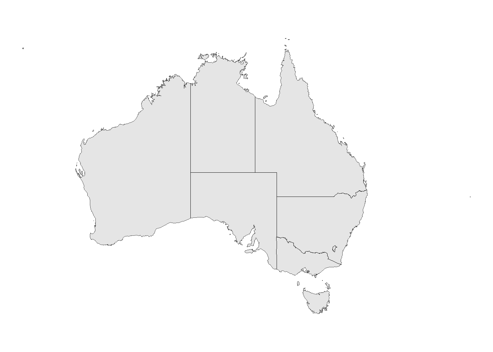
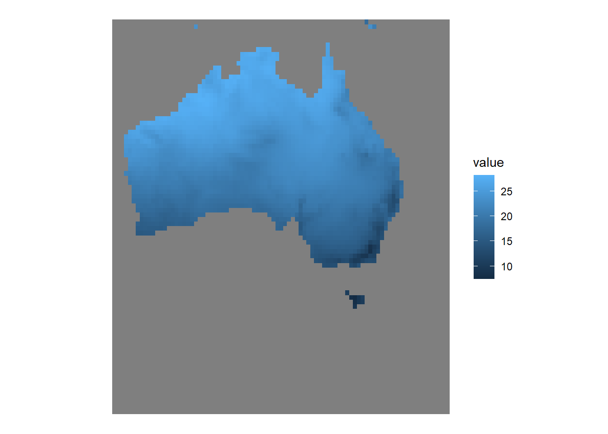
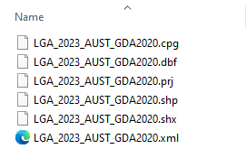

library(sf)
library(ggplot2)
library(dplyr)
library(tidyterra)
library(terra)
library(here)Appendix A — Where to get data
There are many types of biodiversity data to work with. Some examples include observational data of where a species has been observed, climate or environmental data for region or area, biological data to compare measures of organisms’ physical or behavioural traits, and genetic data to compare unique DNA or alleles between individuals.
Here, we’ll detail what open source data is, provide some places to look for open source data and suggest some R packages that are useful for downloading different types of data.
A.0.1 Prerequisites
First, we’ll load packages that we’ll need to display data and figures over the chapter.
A.1 Open-source data
Open-source data are data made openly accessible for editing and use, licensed under an open license. The following are some places where you can find open-source data.
A.1.1 Biodiversity data
Living Atlases are national or regional infrastructures that aggregate biodiversity data from many different sources. These sources include research projects, government monitoring programs, museums & herbaria, and citizen science apps like iNaturalist and eBird. Some examples are:
| Country/Region | Name | Acronym |
|---|---|---|
| Australia | Atlas of Living Australia | ALA |
| Austria | Biodiversitäts-Atlas Österreich | BAO |
| Brazil | Sistema de Informação sobre a Biodiversidade Brasileira | SiBBr |
| Estonia | eElurikkus | |
| France | Portail français d’accès aux données d’observation sur les espèces | OpenObs |
| Guatemala | Sistema Nacional de Información sobre Diversidad Biológica de Guatemala | SNIBgt |
| Portugal | GBIF Portugal | GBIF.pt |
| Spain | GBIF Spain | GBIF.es |
| Sweden | Swedish Biodiversity Data Infrastructure | SBDI |
| United Kingdom | National Biodiversity Network | NBN |
Living Atlases work with local data providers to ingest and standardise open-source data, and some even use a specific taxonomic backbone. If your project is focused on a specific region, downloading data directly from a regional node may be more appropriate.
See a complete list of existing national and regional Living Atlases.
The Global Biodiversity Information Facility (GBIF) is an international data infrastructure and a network that aggregates biodiversity data from the many Living Atlases around the world. GBIF acts as an overarching organisation to store and provide these data from the Living Atlas “nodes” using a unified data standard.
At present, GBIF manages and serves over 2.6 billion occurrence data points!
See a complete list of national and regional nodes that contribute to GBIF.
Biocollections are data infrastructures that hold specimen data from museums and collections.
Some examples include:
| Name | Description |
|---|---|
| Integrated Digitzed Biocollections | Holds data of biological specimens that have been made electronically available (i.e., digitised) |
| VertNet | Holds data of vertebrate specimens from more than 400 collections & 120 publishers |
| Australasian Virtual Herbarium (AVH) | Holds over eight million plant, algae and fungi specimens |
If your project relates to data from a specific data provider, it also might be best to download data directly from the source.
For example, a common citizen science tool to collect species observations is iNaturalist. Downloading directly from the original data source can help to ensure you don’t have any stray data from other sources in your download. You can directly contact data providers to ensure the data hasn’t been pre-filtered before downloading.
Why do we still have to clean data from data infrastructures?
Data infrastructures like the Atlas of Living Australia ingest, aggregate and standardise millions of rows of data from thousands of data providers. Some data comes from large providers with standardised workflows, like state government monitoring programs, iNaturalist Australia or eBird. These data providers use workflows that attempt to remove suspicious records prior to sharing data with a Living Atlas, and, in general, these workflows catch many issues that otherwise might need fixing.
However, not all data providers have standardised workflows. Some data has been transcribed from written survey records and provided by a small or independent data provider. Other data might have been transcribed from archived written records in a museum, or even in a scientists backlog from a long-lost research project. These data are valuable but inevitably prone to errors that are difficult to fix—handwriting can be smudged or difficult to read, records might be lacking important details about their location or time of observation. Even in data from standardised workflows, errors like taxonomic misidentification or flipped geospatial coordinates can slip through the cracks because expert knowledge is required to identify and amend individual records. These records can also range in their precision or level of detail, and might not be suitable for every type of analysis.
Ultimately, it’s a team effort to remove or fix data issues. Although a data infrastructure can use programmatic data quality checks to try to remove more extreme outliers, many errors are context dependent and require verification from the original data provider. This means that the responsibility to fix records usually falls on the data provider because only the data provider has knowledge required to amend their original data. Inevitably, there will be errors in data from many different sources, and equipped with this knowledge, we still need to clean data from data infrastructures to be suitable for our research question or analysis.
A.1.2 Spatial data
Spatial data contain information that corresponds to an area on the globe and can be plotted onto a map. Spatial data can be represented as vector or raster data.
There are two types of spatial data that you will probably use:
Vectors are data for drawing points, lines and shapes. They contain a geometry column which contains information to draw points, lines or polygons onto a map.
Country or region outlines are often saved as vectors, which are typically loaded using an R package like {rnaturalearth} or by reading in a .shp file using the {sf} package.
state_outline <- sf::st_read("path/to/file.shp")Here is an example of what vector data looks like in R…
ozmaps::ozmap_statesSimple feature collection with 9 features and 1 field
Geometry type: MULTIPOLYGON
Dimension: XY
Bounding box: xmin: 105.5507 ymin: -43.63203 xmax: 167.9969 ymax: -9.229287
Geodetic CRS: GDA94
# A tibble: 9 × 2
NAME geometry
* <chr> <MULTIPOLYGON [°]>
1 New South Wales (((150.7016 -35.12286, 150.6611 -35.11782, 150.6…
2 Victoria (((146.6196 -38.70196, 146.6721 -38.70259, 146.6…
3 Queensland (((148.8473 -20.3457, 148.8722 -20.37575, 148.85…
4 South Australia (((137.3481 -34.48242, 137.3749 -34.46885, 137.3…
5 Western Australia (((126.3868 -14.01168, 126.3625 -13.98264, 126.3…
6 Tasmania (((147.8397 -40.29844, 147.8902 -40.30258, 147.8…
7 Northern Territory (((136.3669 -13.84237, 136.3339 -13.83922, 136.3…
8 Australian Capital Territory (((149.2317 -35.222, 149.2346 -35.24047, 149.271…
9 Other Territories (((167.9333 -29.05421, 167.9188 -29.0344, 167.93……and what it looks like when plotted with ggplot2.
ggplot() +
geom_sf(data = ozmaps::ozmap_states) +
theme_void()
Rasters are data for drawing a layer of data values over a gridded area. They contain values of a variable (like temperature) for each pixel of a grid, and Each pixel of the grid represents a square area (e.g., 1 km2). Just like how the smaller each pixel is on a TV screen the higher its definition, the smaller each square is in a raster layer the higher its resolution.
Climate data is often saved as a raster, which is typically loaded using an R package like {geodata} or by reading in a .tif file using the {terra} package.
world_clim_raster <- rast(here("data", "rasters", "aggregated_bioclim.tif"))Here is an example of what raster data looks like in R…
world_clim_rasterclass : SpatRaster
dimensions : 86, 87, 19 (nrow, ncol, nlyr)
resolution : 0.5416667, 0.5416667 (x, y)
extent : 112.5, 159.625, -55.58333, -9 (xmin, xmax, ymin, ymax)
coord. ref. : lon/lat WGS 84 (EPSG:4326)
source : aggregated_bioclim.tif
names : wc2.1~bio_1, wc2.1~bio_2, wc2.1~bio_3, wc2.1~bio_4, wc2.1~bio_5, wc2.1~bio_6, ...
min values : 7.499508, 7.540306, 41.79295, 85.12752, 18.11505, -2.798391, ...
max values : 28.209095, 16.710342, 80.15718, 676.51477, 41.65941, 18.436970, ... …and what it looks like when plotted with tidyterra and ggplot2. This map displays Australia’s annual mean temperature (BioClim 1) in low-resolution.
ggplot() +
geom_spatraster(data = world_clim_raster,
mapping = aes(fill = wc2.1_30s_bio_1)) +
theme_void()
Here are some examples of where to download spatial data.
WorldClim is a database of global gridded climate and weather data for historic, current and future conditions.
Ecologists and biologists tend to work specifically with Bioclimatic variables (BioClim). which are typically more meaningful variables for understanding biological things, derived from fluctuations in temperature and rainfall.
Examples of BioClim variables include Temperature Annual Range, Annual Precitipation, or Precipitation in the Wettest or Driest month. See the complete list of BioClim variables.
Rasters are read into R as a .tif file.
Shapefiles are vector data with information to draw the outline of one or more specific areas or regions.
One of the best ways to search for shapefiles is Google. Some of the safest places to find up-to-date shapefiles are on national or regional government websites. For example, the Australian Bureau of Statistics (ABS) holds shapefiles with many levels of regional boundaries, ranging from states/territories to local government areas.
Shapefiles are read into R as a .shp file. These .shp files are usually within a folder (often a zipped folder) that contains several other files that help to build the .shp file when it is loaded. Here is an example of the contents of an unzipped folder containing a shapefile:

They are then read into R using a function like st_read() from the sf package.
library(sf)
library(rmapshaper)
shapefile <- st_read(here("path",
"to",
"shapefile.shp"),
quiet = TRUE) |>
ms_simplify(keep = 0.1)- 1
-
Many shapefiles are a large file size.
ms_simplify()from the rmapshaper package simplifies the shapefile by reducing the number of points that make up the polygon while maintaining its overall shape. This is a handy way to reduce the size of your shapefile in R.
A.1.3 Taxonomic data
Taxonomy is a complex and broad field of investigation. A comprehensive look into taxonomy is well outside the scope of this book. However, It’s a good idea to consider the taxonomic classification of the organism(s) you’re interested in and any potential naming differences between data sources.
We do advise that before deciding on a final taxonomy to download or use, it’s worth being aware of what naming authority your data is using as its taxonomic backbone. In some taxonomic groups, names can vary widely depending on what taxonomic authority is used. Double check your data after your download them to make sure the classifications you expect are what you finding. This check will help prevent errors later on (though you might still need to re-code data manually).
We discuss these considerations in more detail in the Taxonomic Validation chapter.
Here are some examples of where to find Australian taxonomic information.
| Name | Description |
|---|---|
| The Australian Faunal Directory (AFD) | An online catologue of nomenclature and taxonomy of animal species known to occur in Australia |
| The Australian Plant Name Index (APNI) | A tool for the botanical community containing accepted scientific names of plants |
| The Australian Plant Census | Contains the currently accepted scientific names for Australian vascular flora. |
A.1.4 Trait data
Trait data contains measurements of organisms’ morphological or behavioural traits (e.g., stem length, leaf size, egg size, migratory distance, soil carbon). These data are useful for comparing spatial or temporal differences between individuals, groups or species.
The following are some examples of where to find trait data.
| Name | Description |
|---|---|
| Austraits | A plant trait database that synthesises data from field surveys, published literature, taxonomic monographs, and individual taxon descriptions. The database holds nearly 500 traits across more than 30,000 taxa. |
A.2 Packages for downloading data
There are a range of R packages available for accessing biodiversity data. These packages serve as convenient interfaces to various data providers by making respective APIs usable directly within R. The functionality offered by these packages typically ranges from querying species occurrence records, to more comprehensive taxonomic and spatial download queries.
Below, we highlight some commonly used packages. We encourage users to explore the documentation of each package to understand their capabilities, which will help you select one (or more!) that align with your specific needs.
A.2.1 Occurrence data
galah
galah is an interface for accessing biodiversity data like occurrences, counts, species and media (e.g., images & sounds) from the Living Atlases and GBIF.
In the majority of examples over this book we will be using the galah package. One benefit of using galah is that it uses tidy syntax (much like dplyr) to edit & filter download queries. Additionally, galah can access data from 10 other Living Atlases and GBIF.
library(galah)
galah_config(email = "your-email-here") # Registered ALA email
galah_call() |>
identify("perameles") |>
filter(year == 2001) |>
atlas_occurrences()# A tibble: 344 × 8
recordID scientificName taxonConceptID decimalLatitude decimalLongitude
<chr> <chr> <chr> <dbl> <dbl>
1 0053a1f3-b5e1… Perameles nas… https://biodi… -34.4 151.
2 0135db9a-80ff… Perameles nas… https://biodi… -33.3 151.
3 013b9cb6-7d89… Perameles nas… https://biodi… -28.2 153.
4 01c5d084-f4a5… Perameles nas… https://biodi… -29.2 153.
5 02943584-050a… Perameles nas… https://biodi… -33.3 151.
6 02af5fdd-4800… Perameles nas… https://biodi… -29.3 152.
7 02c5d0db-913f… Perameles nas… https://biodi… -31.2 153.
8 04ad578b-af11… Perameles nas… https://biodi… -26.7 152.
9 0518bfb9-cf9d… Perameles nas… https://biodi… -34.3 151.
10 05496ff9-d61e… Perameles nas… https://biodi… -33.3 151.
# ℹ 334 more rows
# ℹ 3 more variables: eventDate <dttm>, occurrenceStatus <chr>,
# dataResourceName <chr>Other packages
rgbif searches and retrieves data from the Global Biodiversity Information Facility (GBIF).
library(rgbif)
# Download occurrences
occ_search(scientificName = "Calopteryx splendens",
country = "DK",
year="1999,2005")rinat is an R wrapper for accessing iNaturalist observations.
library(rinat)
# Download occurrences
get_inat_obs(taxon_name = "Colibri",
quality = "research",
maxresults = 500)rebird provides access to the eBird web services.
library(rebird)
# Download occurrences
ebirdgeo(species = species_code('spinus tristis'),
lat = 42,
lng = -76)spocc queries and collects species occurrence data from a variety of sources, including GBIF, the ALA, iDigBio and VertNet. spocc is particularly useful because it allows for a single download request in R to query and return data from multiple data sources in a single nested dataframe.
library(spocc)
# Download occurrences
df <- occ(query = 'Accipiter striatus',
from = c('gbif', 'idigbio'),
limit = 25)
occ2df(df)A.2.2 Spatial data
geodata contains data of climate, elevation, soil, crop, species occurrence and administrative boundaries.
# Download world climate data
worldclim <- worldclim_country(
country = "Australia",
var = "bio",
res = 5,
path = here::here("path", "to", "folder")
)ozmaps contains simple features (sf) data for plotting maps of Australia and its regions.
library(ozmaps)
aus <- ozmap_data(data = "states")
ggplot() +
geom_sf(data = aus) +
theme_void()rnaturalearth contains simple features (sf) data for plotting world maps, countries, sovereign states and map units.
library(rnaturalearth)
# Download outline of Brazil
brazil <- ne_countries(scale = "medium",
continent = 'south america',
returnclass = "sf") |>
filter(name == "Brazil")
ggplot() +
geom_sf(data = brazil) +
theme_void()elevatr downloads elevation data from various sources like AWS Open Data Terrain Tiles.
library(elevatr)
library(rnaturalearth)
# Download outline of Cambodia
cambodia <- ne_countries(scale = "medium",
continent = 'asia',
returnclass = "sf") |>
filter(name == "Cambodia")
# Download elevation data for Cambodia
cambodia_elev <- get_elev_raster(locations = cambodia,
z = 11,
clip = "locations",
neg_to_na = "TRUE")A.2.3 Trait data
austraits allows users to access, explore and wrangle plant trait data from the AusTraits database, which synthesises 500 traits across more than 30,000 taxa.
library(austraits)
# load database
austraits <- load_austraits(version = "4.0.1",
path = "path/to/folder")
# extract data by trait
wood_density <- austraits |>
extract_trait("wood_density")A.3 Summary
Over this chapter, we hope you have found some ideas of where to access biodiversity data. The following chapter will help explain how to work with large datasets in R.